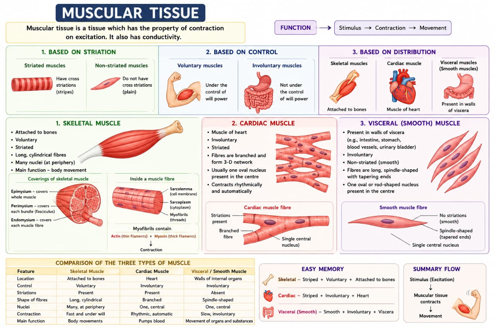
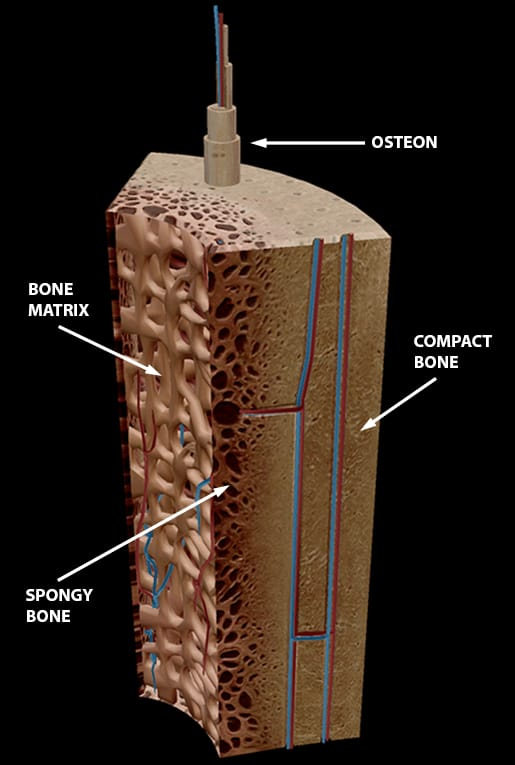
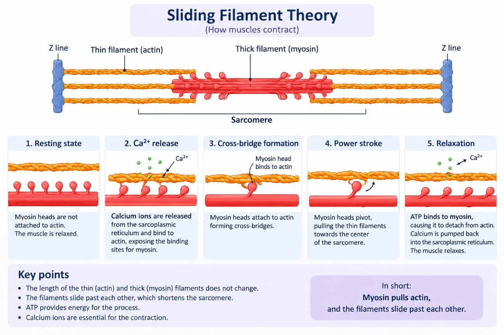

Muscle Tissue Types
Three kinds of muscle tissue, doing three very different jobs — only one of them is under your conscious control.


Every muscle in the body is one of three types, and the differences all trace back to one question: does it need to respond instantly to your will, or does it need to keep working forever without you thinking about it?
Structurally, a whole skeletal muscle is wrapped and subdivided by three nested layers of connective tissue: epimysium around the whole muscle, perimysium around each bundle of fibres (a fascicle), and endomysium around each individual muscle fibre. All three are continuous with the tendon that anchors the muscle to bone.
| Feature | Skeletal | Cardiac | Smooth |
|---|---|---|---|
| Location | Attached to bones | Heart wall only | Walls of hollow organs, blood vessels |
| Appearance | Striated | Striated | Non-striated |
| Cell shape / nuclei | Long, cylindrical, multinucleate | Branched, usually uninucleate | Spindle-shaped, uninucleate |
| Control | Voluntary | Involuntary | Involuntary |
| Contraction | Fast, forceful, fatigues relatively quickly | Rhythmic, continuous, fatigue-resistant | Slow, sustained, fatigue-resistant |
| Special features | Motor units, neuromuscular junction | Intercalated discs, autorhythmicity | Gap junctions; can stretch considerably |
The three connective-tissue wrappings
Epimysium — whole muscle · Perimysium — each fascicle (bundle of fibres) · Endomysium — each individual muscle fibre. Easy memory: EPI = entire, PERI = around each bundle, ENDO = inside, each fibre.
This classification is exactly what makes asana practice possible in the first place: it's skeletal muscle you're consciously lengthening and contracting in a pose, while cardiac and smooth muscle keep your heart and internal organs working throughout the practice without any conscious input from you.
Skeletal Muscle Structure
Inside one muscle fibre, down to the level that actually does the contracting.
Each muscle fibre (a single muscle cell) is packed with many myofibrils running its length. Each myofibril is itself organised into repeating units called sarcomeres — the actual functional unit of contraction, running from one Z-disc to the next.
The sarcomere is the smallest contractile unit of skeletal muscle, repeating along each myofibril from one Z-disc to the next.
Thick filaments (myosin) interdigitate with thin filaments (actin + tropomyosin + troponin), organised into A-band, I-band, H-zone, and Z-discs.
Provides the physical machinery that shortens when the muscle contracts (see next section for the mechanism).
Levels of organisation
This section is pure structural groundwork for the next one (Sliding Filament Theory), where the yoga-relevant content actually appears — no asana link stated for the sarcomere's anatomy on its own.
Sliding Filament Theory
How a nerve impulse becomes an actual shortening of the muscle — ten steps, worth knowing in order.

The core idea is simple even though the steps are many: the thin (actin) filaments slide over the thick (myosin) filaments, shortening the sarcomere — without either filament changing its own length. It's like pulling on a rope hand-over-hand rather than the rope itself getting shorter.
- A nerve impulse reaches the axon terminal at the neuromuscular junction, releasing acetylcholine (ACh).
- ACh binds receptors on the motor end plate, depolarising the sarcolemma and generating a muscle action potential.
- The action potential travels along the sarcolemma and down T-tubules into the fibre's interior.
- This triggers the sarcoplasmic reticulum (SR) to release Ca²⁺ into the sarcoplasm.
- Ca²⁺ binds troponin, shifting tropomyosin away from myosin-binding sites on actin.
- Myosin heads (energised by ATP hydrolysis) bind the exposed sites, forming cross-bridges.
- The myosin head pivots (power stroke), pulling the thin filament toward the sarcomere centre; ADP + phosphate are released.
- A new ATP binds myosin, causing cross-bridge detachment; ATP hydrolysis re-cocks the head.
- The cycle repeats as long as Ca²⁺ and ATP are available.
- Relaxation: stimulation stops, Ca²⁺ is pumped back into the SR, tropomyosin re-blocks the sites, and the muscle returns to resting length.
Neuromuscular junction (NMJ)
The specialised synapse between a motor neuron and a muscle fibre. An action potential opens voltage-gated Ca²⁺ channels → vesicles release ACh → ACh crosses the synaptic cleft and binds nicotinic receptors on the motor end plate → ion channels open, generating an end-plate potential → if it reaches threshold, a muscle action potential fires. Acetylcholinesterase (AChE) then rapidly breaks down ACh in the cleft, ending the signal.
Muscle Tone & Fatigue
Why a "relaxed" muscle is never fully off, and why a working muscle eventually has to stop.
Muscle tone is the continuous, low-level contraction present in a muscle even at rest — it comes from small numbers of motor units firing at different times, so no single part of the muscle is ever fatigued by it. Tone is what keeps posture stable and joints ready to move without any conscious effort, and it's maintained through the stretch (myotatic) reflex: tiny sensors called muscle spindles detect small changes in muscle length, and the spinal cord reflexively fires back a background level of contraction.
Muscle fatigue is different — a progressive, exercise-induced drop in a muscle's ability to generate force, reversible with rest. It comes from two directions: peripheral causes inside the muscle itself (running low on ATP/glycogen, build-up of metabolic by-products, calcium-release problems), and central causes originating in the nervous system (reduced drive from the motor cortex, motivation, perceived effort).
Continuous, partial, asynchronous motor-unit activation at rest; maintained via the stretch reflex (muscle spindles + gamma motor neurons); supports posture, joint stability, venous return, and body heat.
Flaccid paralysis — e.g. lower motor neuron lesion, spinal shock, deep anaesthesia, prolonged bed rest.
Spasticity/hypertonia — seen in upper motor neuron lesions.
Fatigue — peripheral vs central
| Peripheral fatigue | Central fatigue |
|---|---|
| ATP/phosphocreatine/glycogen depletion | Reduced voluntary activation from the CNS |
| H⁺/phosphate build-up impairing Ca²⁺ release & cross-bridges | Reduced motor cortex drive |
| Impaired Ca²⁺ release from the SR | Motivation / perceived exertion |
| Reduced ACh release/receptor sensitivity at the NMJ | Altered neurotransmitter balance |
Biomechanics of Muscle Action
Muscles as levers, and the vocabulary for describing which muscle is doing what in a movement.
A joint acts as a lever: a bone (the rigid bar) rotates around the joint (the fulcrum) when a muscle (the effort) moves a load. Most levers in the body are third-class — the effort sits between the fulcrum and the load, as in the elbow flexing to lift something in the hand. This arrangement always trades away mechanical force in exchange for greater speed and range of motion, which is exactly what the body's movement needs most of the time.
| Class | Arrangement | Characteristic | Example |
|---|---|---|---|
| First | Fulcrum between effort and load | Can favour force or speed | Head on the atlanto-occipital joint |
| Second | Load between fulcrum and effort | Always favours force; rare in the body | Standing on tiptoes |
| Third | Effort between fulcrum and load | Favours speed/range over force; most common | Elbow flexion (biceps) |
Planes and axes
| Plane | Divides body into | Typical movement |
|---|---|---|
| Sagittal | Left / right | Flexion, extension |
| Frontal (coronal) | Anterior / posterior | Abduction, adduction, lateral flexion |
| Transverse | Superior / inferior | Rotation |
This vocabulary (agonist/antagonist/synergist/fixator, force couple, line of pull) is exactly what's used to analyse and cue an asana — which muscle is doing the work, which is being stretched, and which are stabilising the base so the working muscle has something to act from.
Exercise Physiology in Yoga
The section your notes write specifically for this connection — how muscle contraction types and energy systems map onto actual asana practice.
Three types of muscle contraction show up constantly in asana, and naming them is what lets you describe a pose precisely rather than vaguely: isometric (tension without any length change — a static hold like plank or utkatasana), isotonic (tension with the muscle changing length — concentric when it shortens while generating force, e.g. rising into a pose; eccentric when it lengthens while generating force, e.g. slowly lowering out of urdhva dhanurasana), and isokinetic (constant speed throughout the range, with variable resistance — not something that occurs naturally in yoga, but useful as a comparison point against resistance training).
| Contraction type | What happens | Asana example |
|---|---|---|
| Isometric | Tension, no length/joint-angle change | Holding utkatasana or plank |
| Isotonic — concentric | Muscle shortens while generating force | Rising into a pose |
| Isotonic — eccentric | Muscle lengthens while generating force | Slowly lowering from urdhva dhanurasana |
| Isokinetic | Constant speed, variable resistance | Not natural to yoga — a resistance-training comparison |
This is the muscle half of Q22's answer. The bones half — how joint structure sets the natural limits of an asana, and how loading affects bone rather than muscle — is covered in the Skeletal System topic's Joint Movements & Practice section, which the exam question pairs with this one.
Source: consolidated Anatomy & Physiology notes, Unit 3 — The Muscular System (PDF).